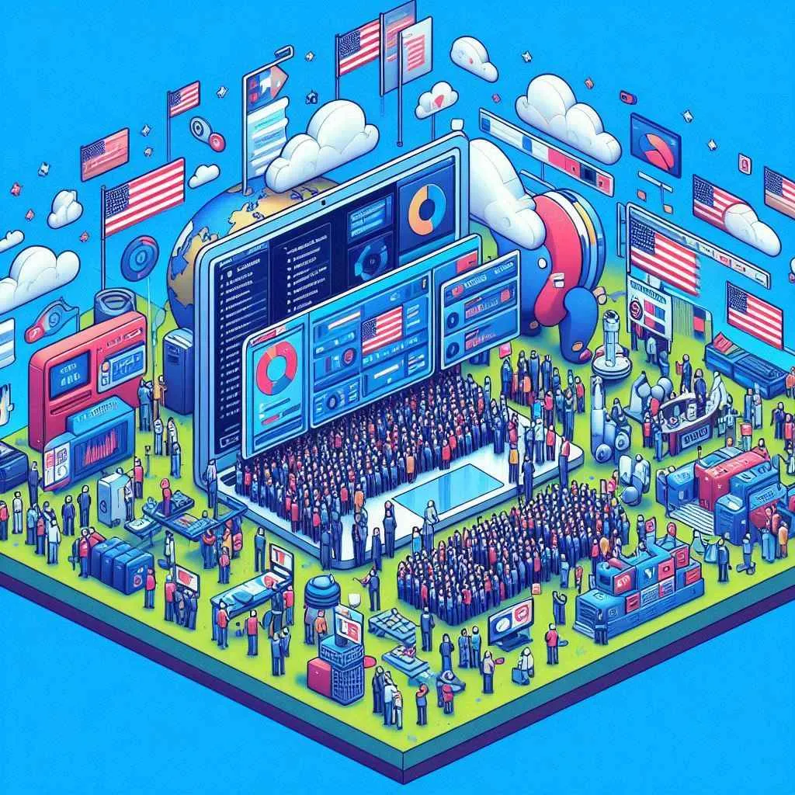
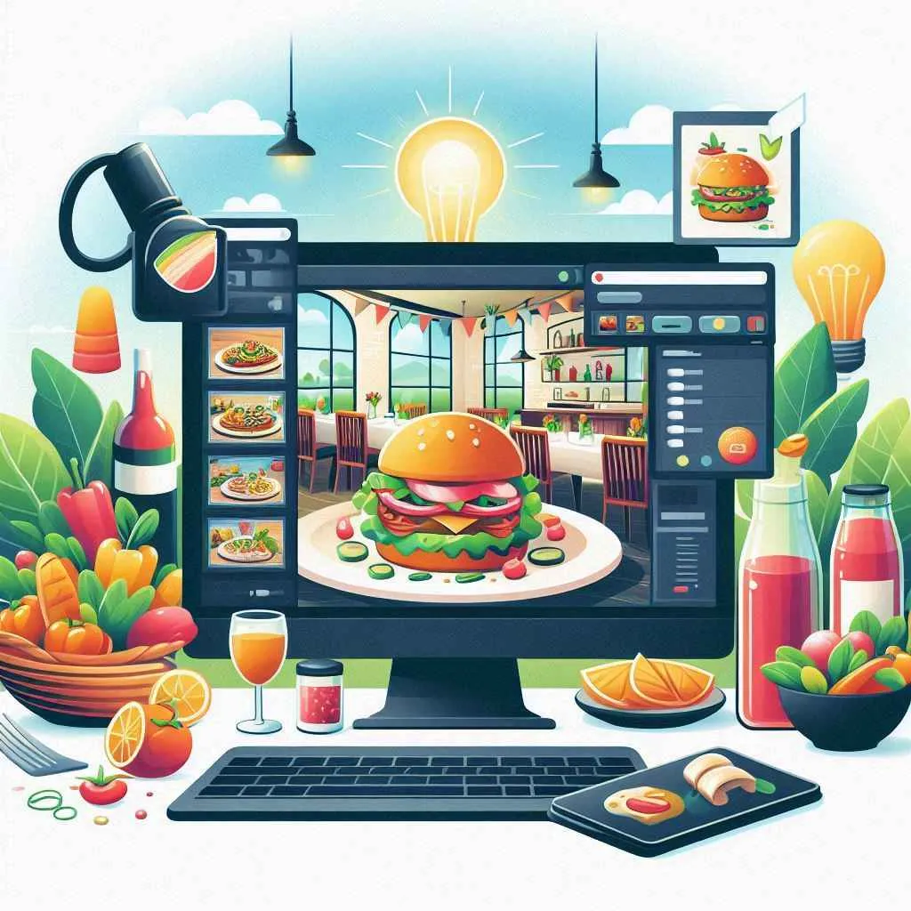
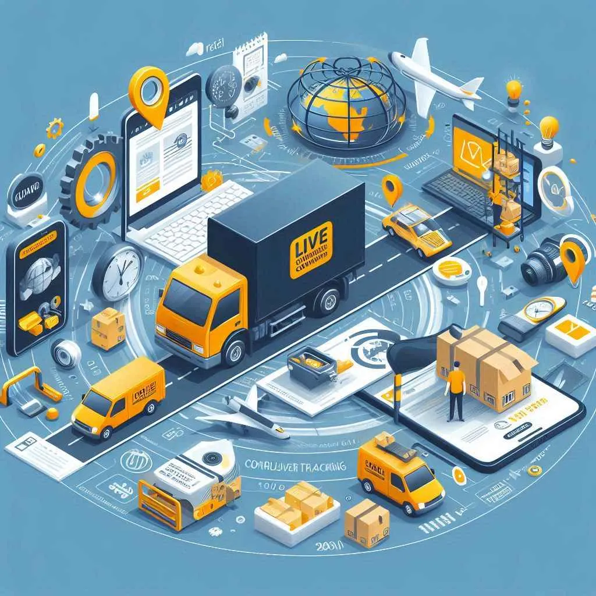
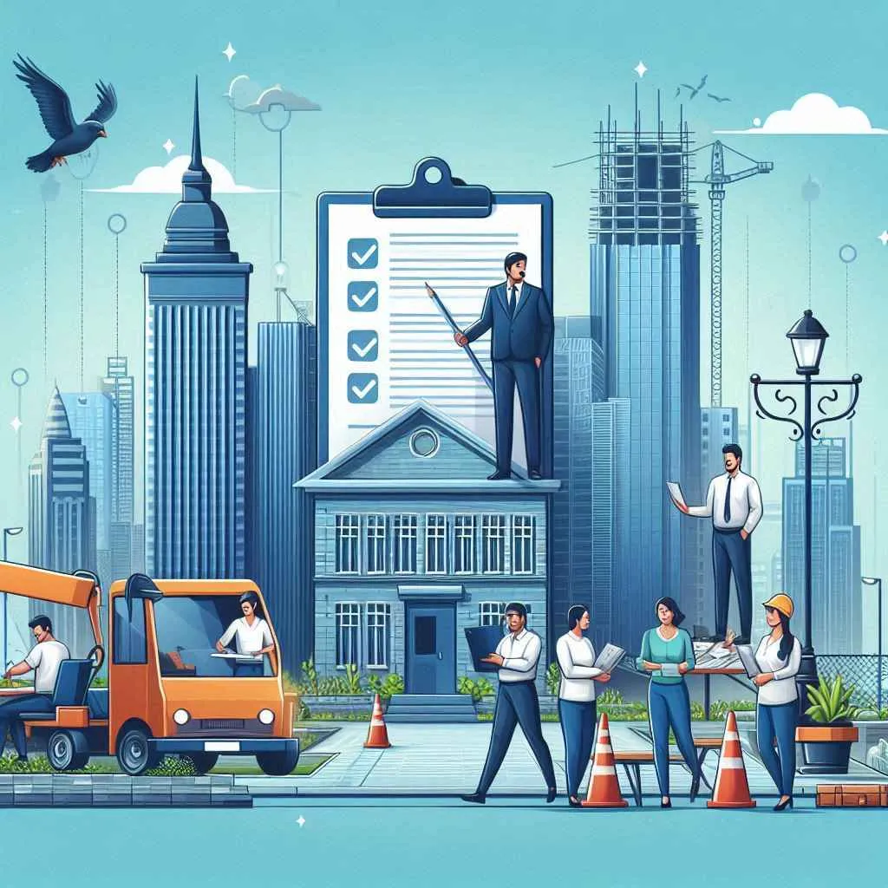
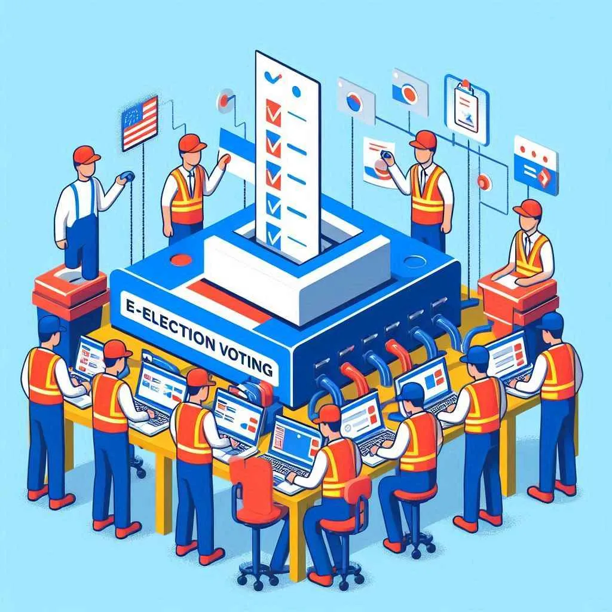

Software Projects

Library Management System
Building Chatbots

Election Analysis

Restaurant Website
College Automation System

Internet Based Live Courier Tracking and Delivery System
Inventory Management System

Municpal Corporation Complaint Management System
Online Crime Management System
